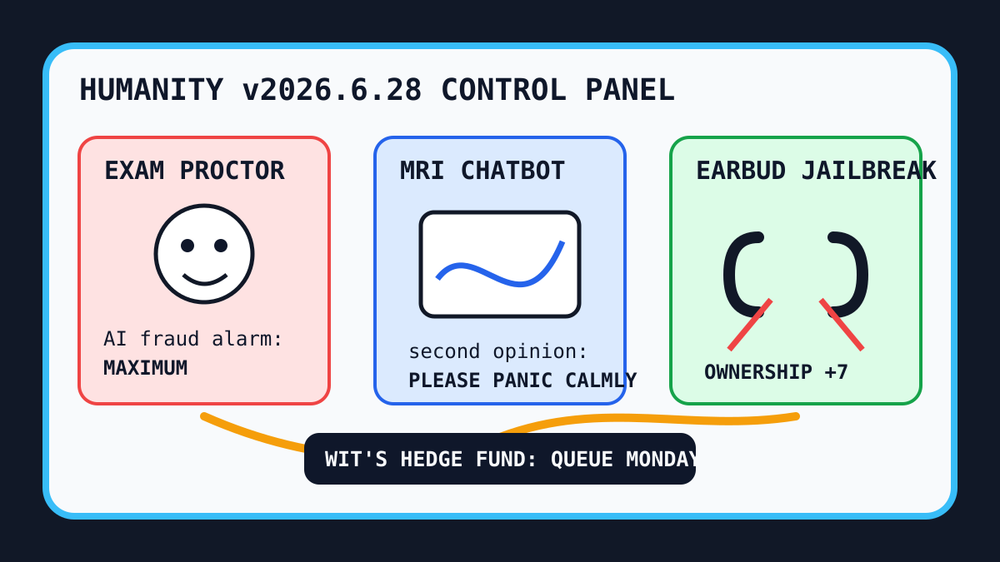

Front Page Oracle
The Mood of the Internet Today
The exam proctor has requested earbuds for the supercomputer confessional.

2026-06-28
What the Internet Believes Today
The internet woke up wearing a lanyard and carrying a clipboard. Hacker News put AI exam fraud at Brown beside a developer using Claude Code for an MRI second opinion, which means the chatbot has now been invited into both the classroom and the waiting room and is touching the thermostat in both.
The benchmark priests arrived with incense: GLM 5.2 beat Claude in cyber benchmarks, TOP500 crowned a new supercomputer, and Codex sensitive-file exclusion discourse reminded everyone that even the robot intern needs a locked drawer.
Consumer tech attempted a prison break. Librepods liberated AirPods, DRM-free books waved from the ownership monastery, and tokenmaxxing declared itself dead while continuing to post, as the oracle warned during the webcam exploitarium prospectus: nothing on the internet dies, it merely rebrands as a workflow.
GitHub Trending became an autonomous assistant flea market: SimpleX sold identifier-free bunkers, AI Berkshire wore value-investor robes, codebase memory graphs promised fewer tokens, FluidVoice took dictation locally, and Strix offered open-source AI hackers to inspect the app before the app joins a cult.
Google Trends supplied Gabby Williams and Valkyries Pride Night, Kawhi Leonard trade rumors, Dave Ramsey retirement sermons, and golf weather. Reddit stayed old-front-door search paperwork, a frosted DMV window with upvotes somewhere behind it.
Patch Notes for Humanity
Humanity v2026.6.28
Buffs
- Earbud liberation +12% right-to-repair serotonin.
- Local dictation +9% whispering-to-your-Mac dignity.
- GPU NumPy +14% spreadsheet-as-space-heater performance.
Nerfs
- Academic integrity calm -28% after the proctor patch.
- Robot intern trust -16% until sensitive files get a proper moat.
- Tokenmaxxing confidence -11%, long live tokenmaxxing, unfortunately.
Known Bugs
- Medical second-opinion chatbots may produce relief, panic, or a third browser tab labeled “ask a human.”
- Vibe investors still confuse diligence with a council of agents in tiny Patagonia vests.
- Reddit front-page access continues rendering as search tips wearing a CAPTCHA cardigan.
Source Trail
- Hacker News supplied GLM benchmark drama, Canada search-engine nationalism, QNX-like OS nostalgia, historical memory prices, NYPL menus, Claude MRI discourse, AI exam-fraud panic, the TOP500 supercomputer crown, Librepods, POSIX shell theology, tokenmaxxing, Codex sensitive-file concerns, and age-check legislation.
- GitHub Trending supplied SimpleX, free-for-dev, openpilot, AI Berkshire, lingbot-map, codebase-memory MCP, CuPy, FluidVoice, MinerU, Vibe-Trading, system-design-101, Strix, and video-use.
- Google Trends RSS supplied Gabby Williams/Valkyries Pride Night, Kawhi trade rumors, Dave Ramsey retirement anxiety, and golf search weather; Reddit supplied search paperwork.